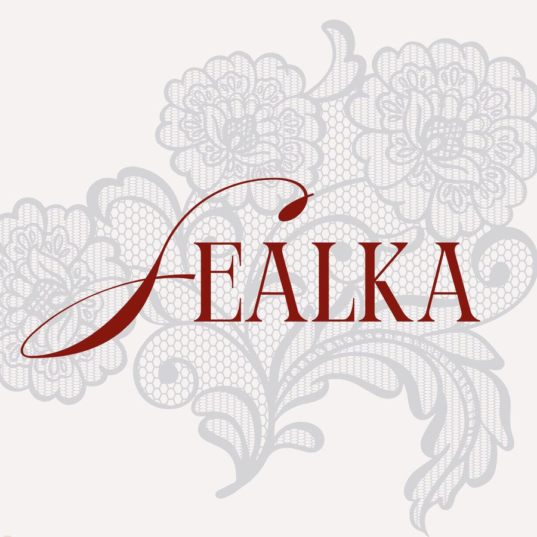
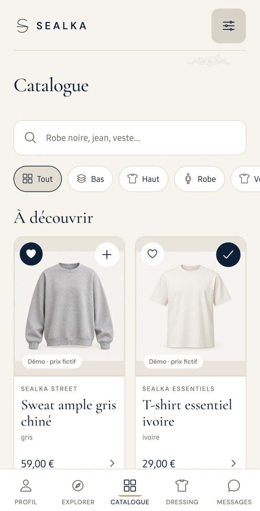
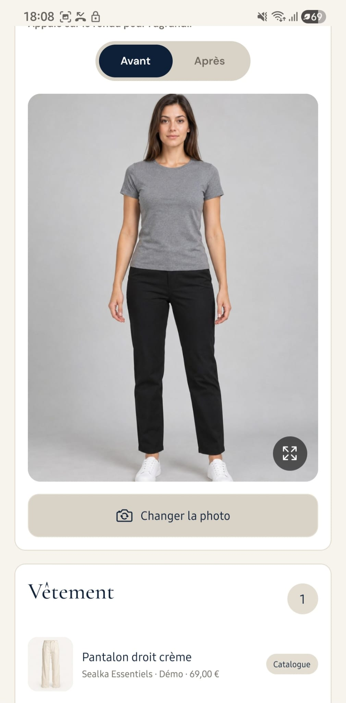
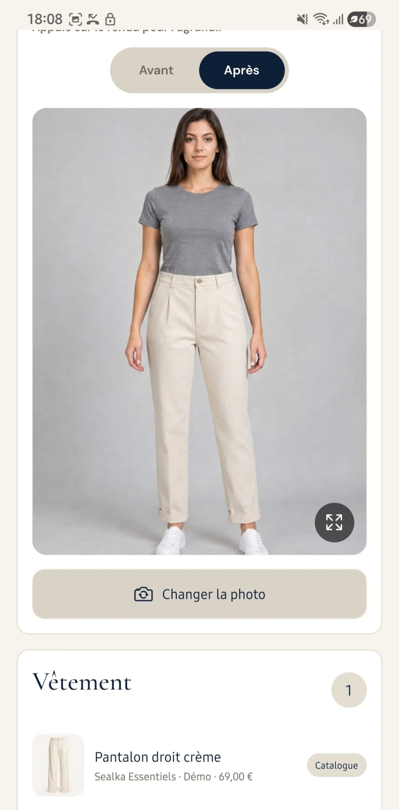

Sealka
Mobile app · Personal project
A digital wardrobe and virtual try-on app. Try an item on your photo and share the result with friends to ask what they think.
Context and goal
Sealka grew out of a personal habit. When I am unsure about buying clothes, I send fitting-room photos to friends to ask what they think. I wanted to make that exchange easier through an app that also brings together a digital catalogue and a personal wardrobe.
The aim is to discover an item, try it on a photo and share the result with friends in one user flow.
Alongside my background in data analysis and data science, this project gave me an opportunity to explore mobile development and the integration of an AI service.
My role
I defined the concept, features and user flows. I designed the visual identity and created the logo. I then integrated changes and tested the app on my phone.
Development was carried out with Codex’s assistance. Virtual try-on uses a model provided by FASHN. I did not train a model for this project.
Approach
I started by making the main user flow work before refining the other screens. The prototype developed over time. I added features, tested them on my phone and fixed the issues I found.
Main features
- Browse a catalogue and add clothes to a wardrobe.
- Add your own clothes from photos.
- Try clothes on virtually and compare before and after.
- Post outfits and discover profiles.
- Share a result in a conversation.
Discover Sealka
Choose a feature to explore the app.

Screen preview · Scroll inside the phone
Catalogue
Screenshots of the Android prototype. AI-generated images and fictional prices are used for demonstration.


After BeforeResult saved from the prototype. This page does not generate a new image.
Sealka in action
Follow the flow through the prototype, from choosing an item to sharing the result.
Technical overview
| Mobile app | React Native and Expo |
|---|---|
| Language | TypeScript |
| Navigation | Expo Router |
| Database | PostgreSQL via Supabase |
| Authentication and storage | Supabase Auth and Storage |
| Server-side processing | Supabase Edge Functions |
| Real-time messaging | Supabase Realtime |
| Virtual try-on | FASHN API |
How try-on works
The user selects a photo and an item of clothing. A server function checks the request, prepares access to the images and starts generation through FASHN.
The app then tracks the processing status. Once the result is available, it is saved and displayed for comparison and sharing.
Technical choices
Bringing services together with Supabase
Supabase handles accounts, data, images and messaging in the same environment.Calling the AI service from the server
FASHN calls go through the server so the API key is kept out of the mobile app.Outcome and limitations
Tests on an Android phone confirmed that the flow worked from choosing an item to sharing the try-on result.
Limitations
Sealka is still a prototype. Some content is demo data and the quality of AI results can vary. Testing has not yet been extended to multiple devices or users.
Next steps
Gather feedback from a few users. Measure try-on success rates, processing time and cost, then analyse the findings. Test data access and image deletion more thoroughly.
What I learnt about working with data
This project helped me understand how data moves from a mobile app to a database and an AI service. I also learnt to handle images, asynchronous processing and errors that can occur along the user journey.
It complements my data projects with practical experience of integrating an AI service into a working product.